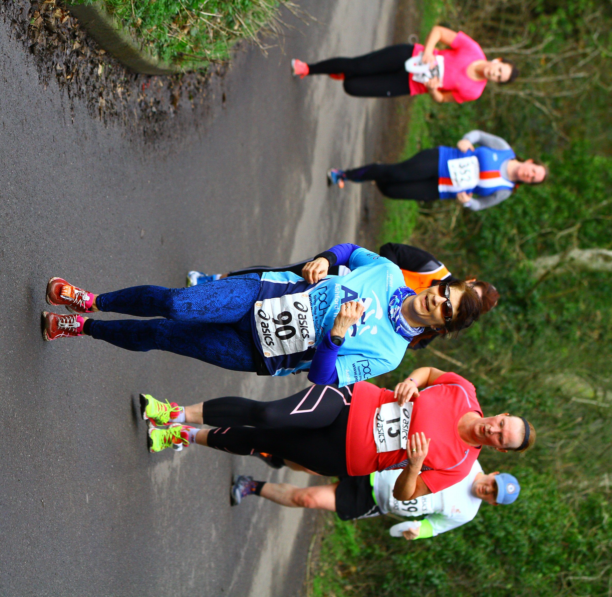

El running tiene muchos beneficios, pero como todo deporte, también conlleva riesgos. En este apartado se desarrollarán las lesiones más comunes de los corredores. El riesgo de sufrir una lesión al practicar running es elevado, ya que este deporte implica un alto impacto, especialmente en el tren inferior del cuerpo.
La intensidad y las consecuencias de las lesiones varían de una persona a otra. Si el problema es leve se puede solucionar con reposo. Pero si hay daños graves pueden requerir cirugía y un período más largo fuera del entrenamiento. Las mejores medidas para prevenir lesiones en el cuerpo que puedes tomar son fortalecer los músculos, trabajar en la técnica y progresar a tu ritmo. Aún así el riesgo está allí y a continuación dejamos algunas de las más comunes.
Tendinitis rotuliana
Es uno de los problemas más frecuentes y peligrosos al correr. Consiste en la inflamación del tendón rotuliano el que une la rótula a la pierna. El origen son la sobrecarga y los movimientos repetitivos. La tenidinitis rotuliana se manifiesta en principio con una molestia ligera que se agudiza con el tiempo. El dolor se produce debajo de la rótula al correr o al flexionar la rodilla.
Periostitis tibial
El estrés de tibia se produce cuando hay sobrecarga de trabajo o cuando se incrementa el entrenamiento de manera brusca. Es decir, los músculos no están preparados para el esfuerzo extra que se le exige. El periostio de la tibia es la membrana externa que recubre los huesos al inflamarse produce la periostitis. Se manifiesta con un dolor intenso en la parte interna de la pierna.
Fascitis plantar
Se produce al inflamarse la fascia plantar que es el tendón que se encuentra en la planta del pie. Es una molestia que no afecta solo a corredores sino también a personas con sobrepeso o que pasan mucho tiempo de pie. Entre sus causas está el uso del calzado inadecuado o aumentar la carga de entrenamiento de manera repentina. La mejor recomendación para prevenirla es comprar zapatillas de running adecuadas para tu tipo de pie.
Síndrome de la cintilla iliotibial
También se le conoce como rodilla del corredor y consiste en la inflamación del tendón que conecta la cadera con la rodilla. Provoca dolor en las caderas o en la parte externa de la rodilla. Al sufrir esta lesión será necesario dejar de correr por tiempo y volver de manera gradual al entrenamiento.
Tendinitis aquilea
Es la inflamación del tendón de Aquiles ubicado en la parte posterior de la pierna. La poca elasticidad de los gemelos y sóleos puede derivar en esta lesión. Se manifiesta con dolor en la parte posterior inferior de la pierna (sobre el talón). En ocasiones también se puede escuchar un crujido al mover el tobillo.
Rotura fibrilar en los isquiotibiales
Los tirones en los isquiobiliales pueden llegar a producir el desgarro de los músculos. Estos se encuentran en la parte posterior de los muslos. La distensión se produce cuando se estiran demasiado sin haber calentado antes. Es una lesión bastante frecuente que suele aliviarse con reposo. El dolor e hinchazón en la parte posterior del muslo son síntomas de la rotura de las fibras de los músculos isquiobiliales.
Condropatía rotuliana
Es el reblandecimiento del cartílago que se produce por el mal posicionamiento de la rótula respecto al fémur o por inestabilidad. Provoca un dolor similar al de la tendinitis. Para volver a correr después de una lesión de rodilla es necesario rehabilitación y un programa de entrenamiento supervisado.
Tratamientos de las lesiones de los runners
Cada lesión tiene su tratamiento indicado pero en general es necesario reposo al menos mientras pasen las molestias. Si hay dolor intenso, entumecimiento, inestabilidad o no te puedes apoyar sobre el área afectada es necesario consultar a un profesional de la salud.
Hay tratamientos que puedes aplicar en casa si el daño no es grave. Estos se resumen en el método rice, iniciales en inglés para rest, ice, compression y elevation (descanso, hielo comprensión y elevación). Se aplica si durante o después del entrenamiento sientes dolor y siempre y cuando no haya heridas.
El método rice consiste en lo siguiente:
- Descanso de cualquier tipo de actividad física mientras desaparece el dolor.
- Colocar hielo en el área afectada por 20 minutos, cuatro veces al día.
- Usar una banda elástica para combatir la hinchazón
- Elevar el área afectada también ayudará a reducir la hinchazón.
¿Cómo evitar lesiones en corredores?
El riesgo de lesionarse siempre está presente en el running. En general se pueden prevenir respetando el progreso gradual y los períodos de adaptación. Las siguientes recomendaciones ayudarán a evitar cualquier problema en tus entrenamientos.
Una correcta entrada en calor incluso antes de los estiramientos iniciales.
El estiramiento es parte de los ejercicios que hay que realizar previo a cada sesión de entrenamiento. Se recomienda hacerlo antes y después para aliviar la tensión de los músculos. Respetar el principio de progresión. Esto quiere decir que debes mantener un ritmo acorde a la condición física de cada corredor. Elegir bien las zapatillas para correr. Además del tipo de pie hay que tener en cuenta la superficie donde se realizan los entrenamientos. No hay que limitarse a correr solo sobre cemento o asfalto. Practicar el running en superficies blandas como tierra y césped ayudará a protegerte de lesiones.

Foto de Funk Dooby disponible en Wikimedia Commons
.jpg){kind=link}